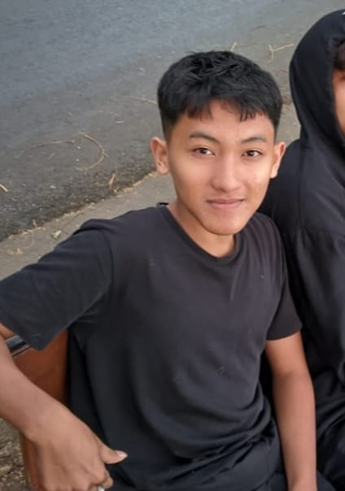

Halo, saya Fatih!
Saya adalah siswa kelas X PPLG yang sedang belajar dan mengembangkan kemampuan di bidang pemrograman, desain, dan teknologi.
Lihat Proyek SayaTentang Saya
Saya adalah siswa SMK Brantas Karangkates jurusan Pengembangan Perangkat Lunak dan Gim (PPLG). Saat ini saya sedang mempelajari dasar-dasar pembuatan website, pemrograman, serta berbagai teknologi yang digunakan dalam dunia industri. Saya senang mencoba hal baru, membuat proyek sederhana, dan terus meningkatkan kemampuan saya sedikit demi sedikit. Bagi saya, belajar teknologi bukan hanya tentang memahami teori, tetapi juga tentang mencoba dan membuat sesuatu secara langsung.
Hobi
- Belajar teknologi dan pemograman
- Bermain game
- Mendengarkan musik
Cita-cita
Menjadi Cybersecurity Specialist. Langkah yang saya rencanakan:
- Menguasai dasar pemrograman dan teknologi web
- Mempelajari jaringan komputer dan cybersecurity
- Mendapatkan pengalaman di dunia industri dan bekerja di bidang cybersecurity
Keahlian
- HTML, CSS, dan JavaScript dasar (sedang dipelajari)
- Git, GitHub, Canva, dan dasar penggunaan komputer
- Mengetik cepat, belajar mandiri, dan memecahkan masalah
Jadwal Belajar
| Hari | Waktu | Kegiatan |
|---|---|---|
| Senin | 19.00 - 20.00 | Belajar materi kejuruan |
| Rabu | 19.00 - 21.00 | Praktik pemrograman dan mengerjakan proyek |
| Jumat | 19.30 - 20.30 | Evaluasi dan mengembangkan proyek |